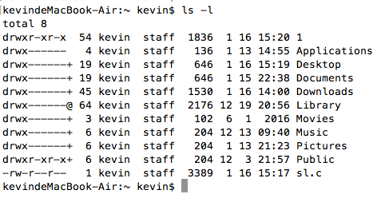

apue ls命令实现
C语言操作目录需要使用opendir()和readdir()。此外文件接口函数还有很多，如stat，umask，chmod，chown，link，rename等。这些函数和shell命令有些是一样的，我们可以通过调用这些系统调用来实现一些命令。这里以ls -l的写法为例介绍一些常用的系统调用文件I/O。

stat()
get file status 获取文件的状态 man 2 stat
int stat(const char *restrict path, struct stat *restrict buf); // 成功return 0，失败return -1指针作为函数参数只有两种情况，一种是传参(path)，一种是做为结果参数. 这里的path就是传的路径，stat函数会获取这个路径文件的状态信息，存入buf这个结构体变量里(struct stat*)
struct stat { /* when _DARWIN_FEATURE_64_BIT_INODE is NOT defined */
dev_t st_dev; /* device inode resides on */
ino_t st_ino; /* inode's number */
mode_t st_mode; /* inode protection mode */
nlink_t st_nlink; /* number of hard links to the file */
uid_t st_uid; /* user-id of owner */
gid_t st_gid; /* group-id of owner */
dev_t st_rdev; /* device type, for special file inode */
struct timespec st_atimespec; /* time of last access */
struct timespec st_mtimespec; /* time of last data modification */
struct timespec st_ctimespec; /* time of last file status change */
off_t st_size; /* file size, in bytes */
quad_t st_blocks; /* blocks allocated for file */
u_long st_blksize;/* optimal file sys I/O ops blocksize */
u_long st_flags; /* user defined flags for file */
u_long st_gen; /* file generation number */
};
struct timespec { // st_atimespec.tv_sec ==> st_atime; st_mtimespec.tv_sec ==> st_mtime;...
time_t tv_sec; // seconds
long tv_nsec; // and nanoseconds
};需要用到的属性st_mode, st_ino, st_nlink, st_uid, st_pid, st_mtime, st_size
st_mode
st_mode 记录了文件类型，文件的权限信息
kevindeMacBook-Air:~ kevin$ ls -l 1.c
-rw-r--r-- 1 kevin staff 247 10 19 22:55 1.c文件类型
第一位:"-" 表示文件类型，UNIX下文件就只有以下7种类型
#define S_IFMT 0170000 /* type of file 用于&st_mode值后与如下值对比 */
#define S_IFIFO 0010000 /* named pipe (fifo) 管道文件"p" */
#define S_IFCHR 0020000 /* character special 字符设备文件"c" */
#define S_IFDIR 0040000 /* directory 目录(文件夹)"d" */
#define S_IFBLK 0060000 /* block special 块设备"b" */
#define S_IFREG 0100000 /* regular 普通文件"-" */
#define S_IFLNK 0120000 /* symbolic link 符号链接(快捷方式)文件"l" */
#define S_IFSOCK 0140000 /* socket 网络套接字文件 "s" */文件对应权限
第2-10位"rw-r--r--" 对应三组权限(当前用户权限、当前用户组权限、其它用户权限)
// 三组权限0644 ==> 110100100 ==> rw-r--r--
// st_mode 类型是mode_t,16位,一般用6个8进制来表示，高两位表示文件类型，第一位最高为1, 16 = 1+5*3特殊属性
第3位是文件的特殊属性(设置用户ID，设置组ID，暂时用不到), 后3位为文件的三种权限
struct stat buf;
stat("1.c", &buf); // 获取当前目录(~)下文件1.c的信息存入变量buf
printf("%lu\n", sizeof(mode_t)); // 打印mode_t的长度
printf("%o\n", buf.st_mode); // 打印st_mode值
// 执行结果:
// kevindeMacBook-Air:~ kevin$ ./a.out
// 2
// 100644
// kevindeMacBook-Air:~ kevin$
// 高两位10表示是普通文件"-"，最后3为表示权限644 "rw-r--r--"st_nlink 文件硬链接数
kevindeMacBook-Air:~ kevin$ ls -l 1.c
-rw-r--r-- 1 kevin staff 247 10 19 22:55 1.c文件的硬链接与软链接：
软链接: 创建一个符号链接(软连接，快捷方式) make symbolic link to a file
int symlink(const char *path1, const char *path2); // 当用stat获取软件接软件文件时，会获取它指向的文件 // lstat()可以解决这个bug, new文件的i节点与源文件不同，大小也不同，不受限于文件系统，可用于目录缺点: 当链接文件换了路径，这个符号链接就找不到了
硬链接: 为一个已存在的文件创建一个硬链接 make a hard file link, 类似于为文件创建了一个新的名字，两个文件的i节点是一样的，cp出来的则不同，i节点是不一样的
int link(const char *path1, const char *path2); // 两个文件任意更改一个都会影响另一个 link("1.c","2.c"); // 修改1.c， 2.c的文件同步更新，rm 1.c或unlink 1.c，2.c都不会变这个函数不能都目录进行操作. 但系统里面是存在目录硬链接的。当文件的硬连接数为0，系统会删除该文件
文件名
为什么要单独讲文件名，如果我们是通过argv来获取文件名，文件名很好获取，但系统自带的ls，是不会传文件名的，这里就需要用到opendir()和readdir()以及st_ino(i结点号)了。有一个笨的方法来获取一个文件的文件名，就是读取当前目录里的每一个文件，与当前文件的st_ino对比，用stat获取文件的状态不包含文件名，但有i结点号
DIR * opendir(const char *filename); // 打开目录
struct dirent * readdir(DIR *dirp); // 遍历读取目录文件，包括. 和..
int closedir(DIR *dirp); // man 5 dir
struct dirent { /* when _DARWIN_FEATURE_64_BIT_INODE is NOT defined */
ino_t d_fileno; /* file number of entry */
__uint64_t d_seekoff; /* seek offset (optional, used by servers) */
__uint16_t d_reclen; /* length of this record */
__uint16_t d_namlen; /* length of string in d_name */
__uint8_t d_type; /* file type, see below */
char d_name[1024]; /* name must be no longer than this */
};示例
#include <stdio.h>
#include <string.h>
#include <errno.h>
#include <sys/stat.h>
#include <dirent.h>
int main()
{
struct stat buf;
char fn[100] = {0};
struct dirent* p;
DIR* dirp = opendir("."); // 打开当前目录
stat("1.txt", &buf);
while (1) {
int n = errno;
p = readdir(dirp);
if (p == NULL && n != errno) { // 读取目录失败
perror("readdir()");
return;
}
if (p == NULL) break; // 读取目录完毕
if (p->d_ino == buf.st_ino) {
strncpy(fn, p->d_name, strlen(p->d_name));
break;
}
}
printf("%s\n", fn);
return 0;
}
// 执行结果:
// kevindeMacBook-Air:~ kevin$ ./a.out
// 1.txt
// kevindeMacBook-Air:~ kevin$其他
- st_uid用户id
- st_gid用户组id
- st_size文件大小
- st_time文件最后修改时间
根据uid，gid获取用户名和用户组名
struct passwd * getpwuid(uid_t uid); // struct passwd* t; t->pw_name 就是用户名
struct group * getgrgid(gid_t gid); // struct group* t; t->gr_name 就是用户组名
// 最后一次修改时间 st_mtime， 是ld类型，可用localtime转为对应的格式 示例:
int main(int argc, char* argv[])
{
struct stat buf;
struct passwd* t1;
struct group* t2;
struct tm* t;
stat("1.c", &buf); // 获取当前目录(~)下文件1.c的信息存入变量buf
t1 = getpwuid(buf.st_uid);
t2 = getgrgid(buf.st_gid);
t = localtime(&buf.st_mtime);
printf("%d ", buf.st_nlink); // 文件硬链接数
printf("%s %s ", t1->pw_name, t2->gr_name); // 文件的拥有者及所在用户组
printf("%lld ", buf.st_size); //文件大小
printf("%d %d %d:%d\n", t->tm_mon+1, t->tm_mday, t->tm_hour, t->tm_min);
return 0;
}
// 执行结果:
// kevindeMacBook-Air:~ kevin$ ./a.out
// 1 kevin staff 247 10 19 22:55上面的例子其实已经包含了ls -a实现方法了，ls只需过滤文件名为.开头的文件
ls -l 就是ls功能的增强版，只是遍历文件得到文件名后，在获取文件状态，再按照上面的方法获取相应值。
ls -R的实现也是可以的，递归的方法好实现，但当数据过大时栈满了会溢出。造成段错误!